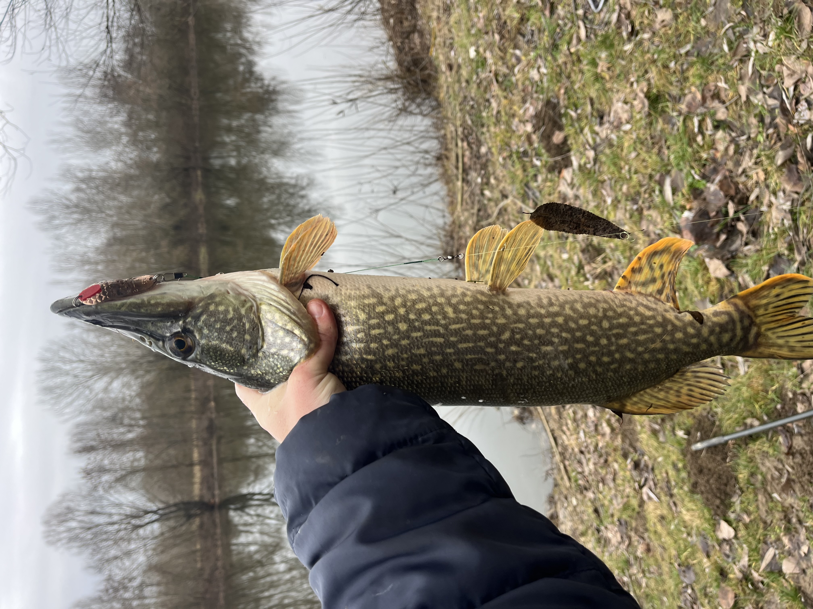
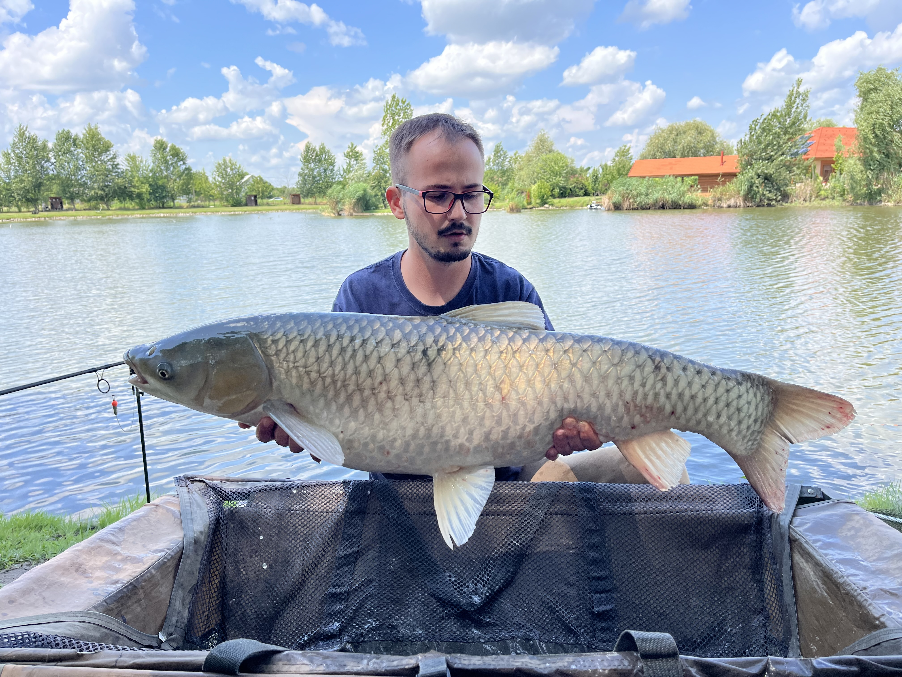

Üdvözöllek az oldalamon!
Szia, Bence vagyok! Ez az oldal azért jött létre, hogy megosszam a horgászat iránti szenvedélyemet. Itt találod majd a történeteimet, a legnagyobb fogásaimat és a tapasztalataimat a vízpartról. A posztok gyakorisága függ az időmtől és a horgászataim eredményességétől!
Nézd meg a fogásaimatAz oldal célja
Nem titkolt célom, hogy bemutassam a természet közelségét és a horgászat szépségét. Legyen szó egy hajnali pergetésről vagy egy többnapos bojlis túráról, vagy éppen egy délutánis feederezésről, minden pillanat számít.
Legnagyobb Fogásaim

Őszi Csuka a Vissi-holtágból
Helyszín: Vissi holtág | Súly: 2.5 kg | Csali: Támolygó kanál
Part alatt kapta el törésen, fél nap pergetés után
Részletek
Nyári Amur
Helyszín: Palocsa horgásztó | Súly: 12.5kg | Módszer: Feeder
Déli kapás volt a legnagyobb melegben
Részletek